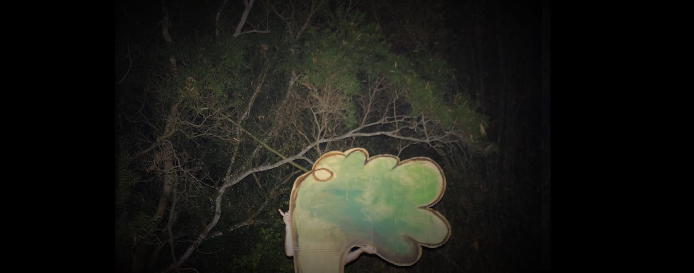
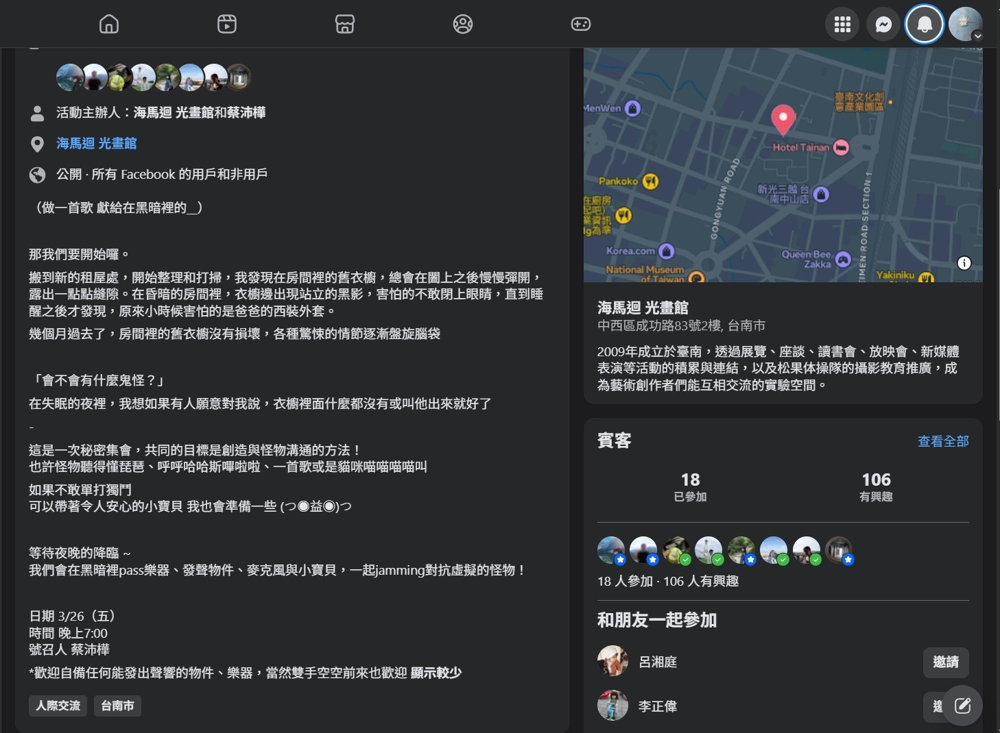
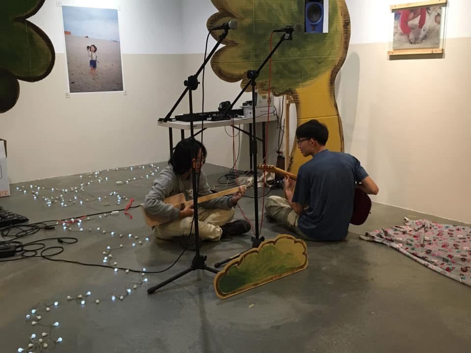
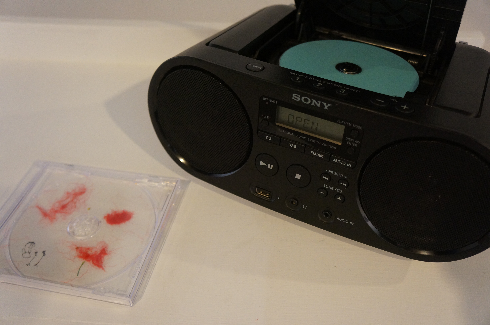
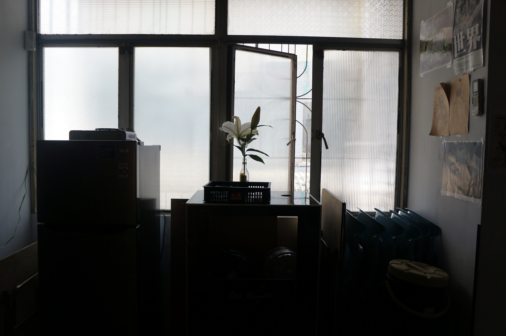

歌唱
《歌唱》（2021）以集體即興聲音事件的形式呈現。作品源自於創作者對黑暗、恐懼以及與死亡相遇的個人體驗，建構了一個空間和物質環境，邀請觀眾參與聲音的創造。它將旁觀者的角色轉化為一種在場和回應的方式。
這件作品源自於一則日本女演員在衣櫥中自殺新聞的情感回應，我亦想起小時候在黑暗中輾轉反側、凝視衣櫥裡露出的衣角、難以入睡的回憶。





展覽中，一篇短篇故事〈山路上的大熊阿伯〉和百合花同時呈現，而活動公告則在社群媒體上傳播，共同構成邀請函，為參與者開啟了一個情境。空間由簡單的物件和結構構成，營造出聲音發生的環境。預先設定的音效圖層作為出發點，如同麵團需要時間發酵，空間逐漸展開。各種聲音開始湧現——管道的沙沙聲、敲擊牆壁的聲音、零碎的人聲——從輕柔到愈發躁動卻又柔和，觀眾成為事件的主要推動者，並消解了其最初的結構。
事件的痕跡被記錄下來，刻錄到CD上，並與參與者分享。部分舞台元素將保留在空間中，直到展覽結束。
聲音前期與後期製作 王源廷、張祐禎
器材提供 王源廷、成大熱音社
道具提供 海馬迴 光畫館
特別感謝 來jam的你

後記
曾聽聞過誰說，對責任(responsibility)的定義是一種「回應的能力」，你的行動可能是有限的，但你的責任──回應的能力是無限的且沒有邊界的；你可能沒辦法飛上星星，但你能對它歌唱。
現在回看，或許當時的我並不清楚，因為難受的感覺太強烈，但現在我想我的這件作品與此有關。
2026/2/26
於台灣台南 海馬迴 展出